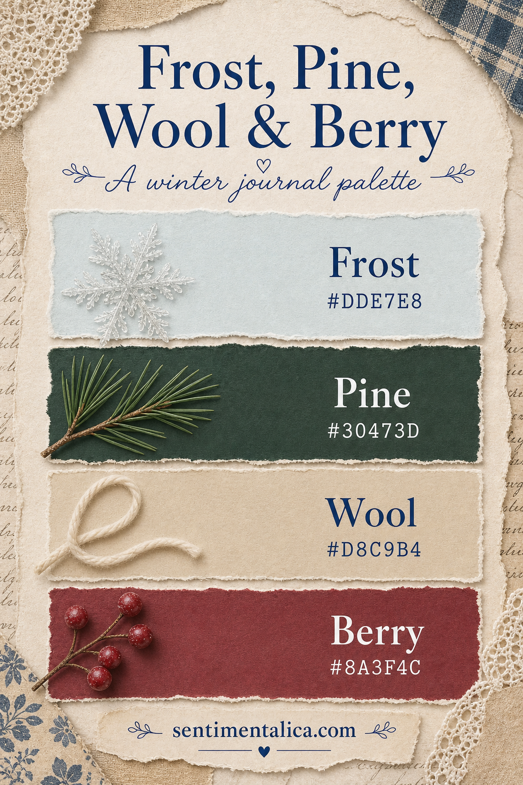
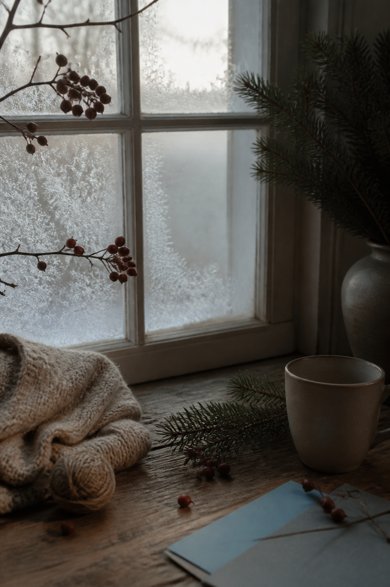

Winter pages can become either stark blue-and-white or overwhelmingly Christmas-red. A four-color palette creates a quieter middle ground: pale frost for light, pine for depth, wool for warmth, and berry for one note of life.

Let Frost hold the empty space
Use Frost #DDE7E8 across the largest calm areas. Pine #30473D is the anchor: place it in a title strip, frame, thread, or botanical silhouette. Two small repetitions are enough.
Warm the transition
Wool #D8C9B4 softens the space between pale ground and dark green. Try linen, kraft, torn book cloth, or warm-gray pencil.

Keep Berry precious
Berry #8A3F4C works best as three stitched crosses, one postage detail, a narrow ribbon, or a few painted dots. Before gluing, aim for roughly half Frost, one quarter Wool, one fifth Pine, and only a touch of Berry.
Visuals in this article were created with AI assistance and art-directed for Sentimentalica.
Find more palette-led ideas in the Sentimentalica journal archive.